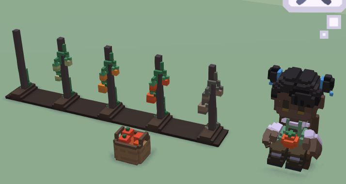
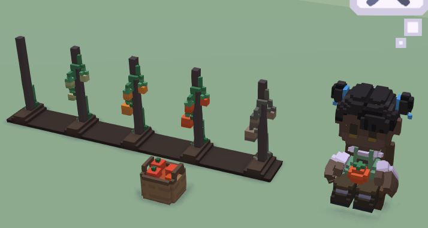

In the stonehearth mod there are crops that produce edible items, tree saplings (which are placeable items), herbs and fiber resources (which are used as ingredients for crafting recipes). But you can make them produce other type of items, if you want.
- Creating the crop
- Creating the ripe product
- Adding our crop to the list of available crops
- Unlocking crops
- Creating a crop with SHED
Creating the crop
First let's copy an existing crop from the stonehearth mod to our mod. For this example, we'll copy the turnip crop. We can find all the crops inside the
stonehearth/entities/cropsdirectory.Now we rename our copied files and directories as always. We're going to make a tomato crop for this example.
Then we modify the files. The crop's JSON file defines an entity and must have the following components:
"model_variants" : {} -- each entry here describes the model to use at a stage of the crop's existence. They can range from tiny to fully grown, to wilted. The name you use for the variant here will be used later in the file. We also define a "default" variant that can be used by other scripts that don't care about the stages of the crop.
"mob" : {} -- the mob component, here we define the "model_origin" to center the model over the fallow field, and "mob_collision_type" of "clutter" so that hearthlings can clip through them.
"stonehearth:crop" -- this is the crop component. It needs the following data:
- "resource_pairings" : {} -- takes names of stages and maps them to the output if the crop is harvested at that stage. We map the model variant name of the full grown crop to the alias of the output item and the name of the rotten variant to an empty string, so that when harvested it just gets destroyed.
- "harvest_threshhold" -- defines what stage the crop must get to before is is automatically harvested by the farmers.
- "plant_overlay_effect" -- deprecated field that is no longer in use by the crop component, it can be ignored.
"stonehearth:growing" -- this defines how often growth happens (moving the crop from one stage to the next) and what to change the description/model to at each stage.
- "growth_period" -- amount of time that must elapse between growth stages. Defined by Xn, where X is a number and n is a m for minutes, h for hours, and d for days (in-game time).
- "preferred_seasons" : {} -- list of the crop preferred growing seasons for each biome. The key is the biome alias and the value is an array of strings that contains only the preferred seasons' names from that biome for our crop. Planting crops in their non-preferred seasons will make them grow more slowly.
- "growth_stages" -- an array of JSON objects, each containing 3 properties describing each growth stage: "model_name" (which references a model variant defined above), "name" and "description" (localized strings that will appear in the unit frame when we click on the crop model).
Notice the empty objects ( { } ) between the ripe stage and the rotten stage. They are used to wait N times * growth_period in the ripe stage, so you have enough time to harvest them before they rot. You can add / remove as many of them as you want. - "growth_check_script" -- defines an optional file (e.g.: "file(corn.lua)") containing a "growth_check" function that can be called on reaching each stage of growth to see if we are capable of going on to the next stage. Just create a Lua script that contains a class with a function with this signature
growth_check(entity, target_growth_stage, growth_attempts)and that returns a number representing a stage (check the growing component's_growfunction to see how this is used).
Nowadays no crop in the game makes use of this field, since there are many other places where crop growth can be affected (weather / seasons, town bonuses...) so this option adds micromanagement and it's hard to balance, but it can be used to implement things like soil fertility (producing better crops, adding another resource_pairing), crops that only grow at night, etc.
For the "entity_data", we'll leave the "net_worth" as is, because this file represents the crop while it's in the farming field (not "buyable" / "sellable"), and the "value_in_gold" will count for the agriculture score of our town's net worth, so we'll leave it at 1 (otherwise the net worth might increase too fast, since each crop adds to the score).
For the catalog, we'll make sure the localization strings for the name and description point to our mod (this is the name and description that will appear on the farmer's crops list when selecting a farm field), and that the material tags include "crop".
We edit our QB models according to the number of stages we want our crop to have and take a screenshot for the icon, which will be shown in the crops list in the UI.
Finally, we add an alias for our crop in our manifest:
... "aliases": { "crops:tomato_crop": "file(entities/crops/tomato_crop)" }, ...
Creating the ripe product
Crops produce different items when they are harvested, based on what is specified in the "resource_pairings" map.
Since we're adding a tomato crop in our example, now we'll create its output, a basket of tomatoes.
We'll copy the turnip food item. All the edibles are inside
stonehearth/entities/food.As always, we'll rename the files, edit the QB models and take a screenshot for the icon for the UI.
Let's check the tomato_basket.json file:
It has a mixin (
"mixins": "stonehearth:mixins:food_decay"). The properties inside this mixin will be used by the food_decay service to make the basket rot after some time (and eventually disappear).It has two model_variants, one for the normal basket and another one for when the basket rots. Optionally there's a "mob" component if we need to adjust the model origin.
It has a stacks component:
"stonehearth:stacks": { "max_stacks": 10 }This is how many crops must be put into the basket before it is ready to be carried to a stockpile for consumption. In this case, hearthlings will harvest 10 tomato crops (when possible) before dropping the basket.
The number of stacks doesn't apply for crafting. In crafting ingredients, it's the quantity of items what matters.In the entity_data, we have the net_worth data as always, and a neutral appeal (0).
The catalog includes "is_item", a "category", many "material_tags" so we make sure it is properly tagged and restocked, and an extra key, "subject_override".
This key points to an alias that will be used when hearthlings talk. It will make it so that instead of talking about a basket of tomatoes, they will talk about the tomato crop (a picture of a tomato crop will appear in the thought bubble, instead of a picture of a tomato basket).
We edit the localization keys, the material tags and the subject override to point to our mod.
Then we have the "stonehearth:food_container" info, because this item is a food container:
- "effect" points to the name of an effect file that will be played when retrieving items from the basket.
- "food" points to the alias of the serving's JSON file (see below).
- "stacks_per_serving" is the number of stacks that will decrease from the basket whenever we get a serving from it to eat. If the remaining stacks are 0 or less, the basket will disappear.
Finally, don't forget to add an alias for our tomato basket in our manifest:
"aliases": { "crops:tomato_crop": "file(entities/crops/tomato_crop)", "food:tomato:tomato_basket" : "file(entities/food/tomato/tomato_basket)" },The alias must match what we added for the resource_pairings in our crop's json file.
Creating a serving
Usually, crops produce baskets of food that are then used as serving containers for meals. Any food item that can be eaten (not just a cooking ingredient) must have a serving entity associated with it (defined in the entity_data's "stonehearth:food_container" section).
We already copied the serving files when we copied the
stonehearth/entities/food/turnipfolder. Now we'll do the usual renaming and editing.The tomato_serving.json file doesn't have many properties, these are the new ones that haven't been explained before, under "entity_data":
- "stonehearth:item" -- this data is used in a couple of places like the inventory controller, resource call handler, and the carry block component. It has a couple of properties:
- The "category" field is not really used, since "category" is nowadays part of the catalog data.
- The "destroy_on_uncarry" flag, which determines that this item will be destroyed if it gets dropped to the ground.
- "stonehearth:food" -- here we have read-only data for the serving:
- "stonehearth:sitting_on_chair" and "default" -- inside them we have a number for the "satisfaction", which is how much the serving will fill the hearthling's stomach (calories) when they're sitting on a chair and when they're sitting on the ground.
- "eating_effect" -- optional field. We can declare a custom effect here (if we don't, hearthlings will use the "eat" effect by default). Useful if we want to define a different animation, for example for drinks.
- "stonehearth:item" -- this data is used in a couple of places like the inventory controller, resource call handler, and the carry block component. It has a couple of properties:
We add an alias for our serving in our manifest, so that we can use it in the basket's JSON file. Now the aliases section looks like this:
"aliases": { "crops:tomato_crop": "file(entities/crops/tomato_crop)", "food:tomato:tomato_basket" : "file(entities/food/tomato/tomato_basket)", "food:tomato:tomato_serving": "file(entities/food/tomato/tomato_serving)" },
Adding our crop to the list of available crops
Add a mixinto to the all_crops.json file:
"mixintos": { "stonehearth/services/server/farming/data/all_crops.json" : "file(services/server/farming/data/all_crops.json)" }The mixinto looks like this:
{ "crops": { "tomato": { "crop_type": "more_crops:crops:tomato_crop", "ordinal": 1, "level_requirement": 1 } } }We add the alias of our new crop, an ordinal for the list of crops, and a level requirement for the farmer in order to unlock our crop. In this example we used level requirement of 1 so it will be unlocked by default.
We add a mixinto to the
services/server/farming/data/initial_crops.json:"mixintos": { "stonehearth:farmer:all_crops" : "file(services/server/farming/data/all_crops.json)", "stonehearth:farmer:initial_crops" : "file(services/server/farming/data/initial_crops.json)" }The mixinto looks like this:
{ "crops_by_kingdom": { "stonehearth:kingdoms:ascendancy": { "tomato": true }, "rayyas_children:kingdoms:rayyas_children": { "tomato": true }, "northern_alliance:kingdoms:northern_alliance": { "tomato": true }, "another_kingdom:kingdoms:another_kingdom": { "tomato": true } } }We can add it for any kingdoms we want to, even if players might not have installed the mods that add them. It will be applied when the kingdom is chosen, so here we can decide whether our crop will be in the crop list by default or if that kingdom will have to unlock it with seeds, etc.
If we don't add this mixinto, we'll have to provide other way for the players to unlock our crop.
Finally, let's test that our crop can be planted, that it grows and that it can be correctly harvested (and eaten, if it's an edible crop).
For faster testing, we can select a hearthling and use the promote_to farmer command in the default console.
If we have the debugtools mod enabled, we can also shift+click on the hearthling and click on "Make Hungry" so that they try to eat from our basket. We can also force grow a crop by holding shift and clicking on it, then clicking on "grow".
 

Unlocking crops
There are several ways to manually unlock crops when we don't add them to the initial_crops list, although the code used underneath is mostly the same.
Unlock a crop via an encounter. The example would be the heirloom crop from the Amberstone campaign. It is an encounter of type "script", we unlock the crop in that script. You can reuse it if you need. The code just retrieves the job info controller of the farmer and calls its
manually_unlock_cropfunction:local farmer_job = stonehearth.job:get_job_info(player_id, "stonehearth:jobs:farmer") farmer_job:manually_unlock_crop("crop_id_from_all_crops_list")Unlock the crop via a consumable. These consumables have a command in the unit frame to use them. In the case of crop seeds, they will add the crop to the list of crops and the box of seeds will disappear. The code that the command uses to unlock a crop is the same used for the encounter above, but with different parameters since it's a function that's also called for other types of consumables, so it has to share the same name and parameters.
We can create a box of seeds by copying one from
stonehearth/entities/consumables/seedsand modifying the files. In the JSON file of the root entity there's this part in "entity_data" where we can declare the crop to unlock:"stonehearth:consumable": { "script": "stonehearth:consumables:scripts:unlock_crop", "crop": "tomato" }Then we would give the box of seeds to the player via an encounter, loot, or by making a recipe for them, etc.
If we want to add them to the possible rewards from the foreign crops trader, we can add a mixinto to
stonehearth/data/gm/campaigns/trader/arcs/encounters/returning_crop_trader_encounter.json(this file is a different one in the rayyas_children mod, so we can add another mixinto to it too).Unlock the crop by calling the
add_crop_typefunction in the farming service in a custom Lua script (passing the session and the alias of the crop as arguments). This forceful way of adding crops is not recommended. The game does not use it, it's only used in autotests for quick testing.
Creating a crop with SHED
The steps are the same than when cloning any other entity. You'll need to clone the crop, basket and serving entities separately in SHED, and later add the mixinto to the crops list manually.